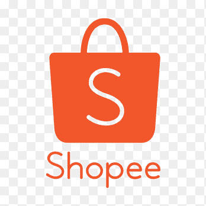
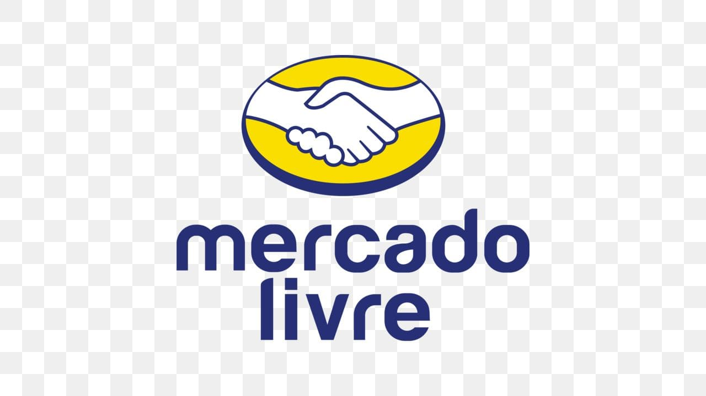
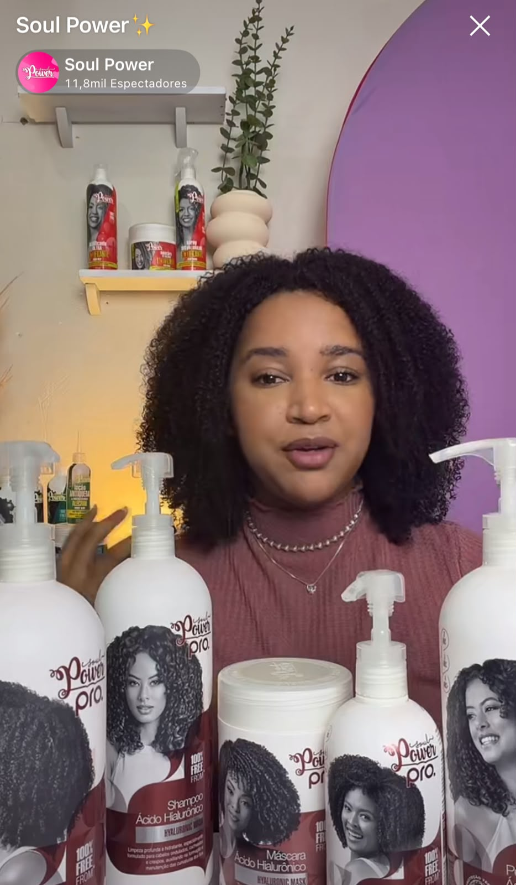
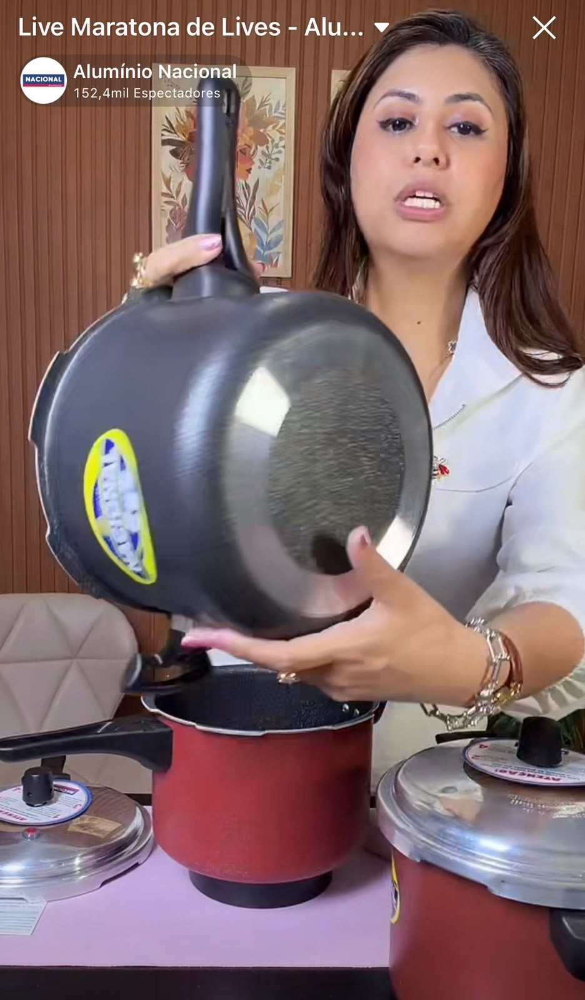
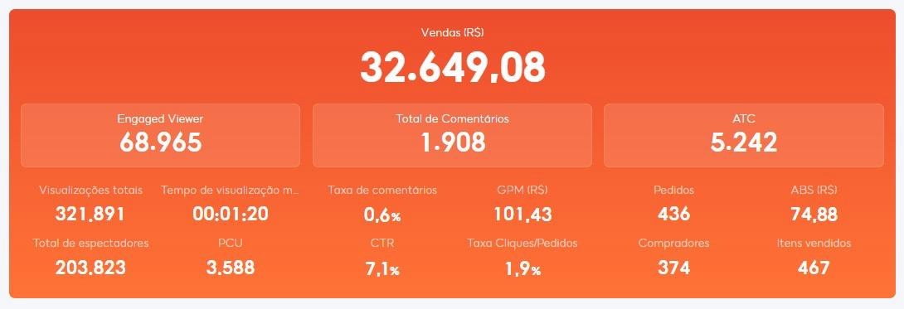

em volume de vendas movimentado pela nossa operação e rede de afiliados.
Live Commerce • Social Commerce • Afiliados • Performance
Transformamos lives em audiência, escala e vendas.
A Click Live conecta marcas e vendedores a uma rede de afiliados que produz lives diariamente e também estrutura operações completas de live diretamente nos perfis das marcas.
Escala
Rede ativa de creators e afiliados
Performance
Operação orientada por GMV e conversão
Marca
Lives operadas diretamente no perfil oficial
de pedidos gerados em escala através das operações conectadas à Click Live.
criadores e afiliados conectados ao nosso ecossistema de Social Commerce.
Ecossistema
Atuação conectada às principais plataformas de Social Commerce.


Quem somos
Uma operação criada para fazer o Live Commerce crescer de verdade.
A Click Live é uma agência especializada em Live Commerce e Social Commerce. Atuamos com uma ampla rede de afiliados que produz lives diariamente em seus próprios perfis, ampliando alcance, audiência e vendas para produtos e marcas parceiras.
Também desenvolvemos e operamos lives diretamente nos perfis oficiais das marcas, cuidando de estratégia, produção, apresentação, performance comercial e acompanhamento de resultados.
Nosso modelo une distribuição, creators, dados e execução para transformar presença em live em crescimento real de audiência e resultado comercial.
Nossa proposta
“Não colocamos a marca apenas no ar. Criamos uma operação para ela crescer, vender e construir audiência.”
Nossas soluções
Duas frentes para colocar marcas e produtos no centro das lives.
Da distribuição através de milhares de afiliados até uma operação dedicada no perfil oficial da marca.
01
Rede de afiliados em live
Conectamos produtos e campanhas a afiliados que produzem lives diariamente em seus próprios perfis, ampliando exposição, frequência e potencial de conversão.
- Distribuição em escala
- Afiliados e creators ativos
- Campanhas orientadas por performance
- Acompanhamento de GMV, pedidos e conversão
02
Lives para marcas
Criamos e operamos lives diretamente no perfil oficial da marca, combinando conteúdo, apresentação comercial, audiência e estratégia de crescimento.
- Estratégia e planejamento de live
- Produção e operação
- Apresentação e dinâmica comercial
- Crescimento de audiência e vendas
Resultados reais
Cases que mostram o potencial de uma operação bem executada.
Exemplos de lives operadas diretamente para marcas, unindo conteúdo, audiência e performance comercial.

Case de crescimento
Soul Power
+5 mil seguidores em apenas 4 dias
Operação de lives diretamente no perfil da marca com foco em crescimento real de audiência, presença digital e construção de comunidade.
4 dias
de operação
+5 mil
novos seguidores

Case de vendas
Alumínio Nacional
Cerca de R$ 30 mil vendidos em uma única live
Uma transmissão com estratégia comercial, apresentação de produtos e foco total em conversão para transformar audiência em resultado.
1 live
operação dedicada
≈ R$ 30 mil
em vendas
A Click Live em ação
Lives reais. Operação real. Performance acompanhada de perto.
Nossa estrutura acompanha diferentes categorias, perfis de afiliados e formatos de transmissão.

Creators
Afiliados vendendo em tempo real
Produtos ganhando exposição através de creators preparados para live e conversão.

Dados
Performance acompanhada por métricas
Leitura de indicadores para ajustar estratégia, oferta, retenção e eficiência comercial.

Categoria
Operação em diferentes nichos
Beleza, moda, casa e outras categorias conectadas a creators e operações especializadas.

Performance
Resultado que pode ser medido
Volume, pedidos, GMV e performance comercial acompanhados para orientar as próximas decisões.
Por que Click Live
Estrutura para quem quer entrar no Live Commerce com escala.
Rede ativa
Milhares de afiliados e creators conectados ao nosso ecossistema.
Execução
Operação que vai da estratégia à live acontecendo de verdade.
Dados
Decisões guiadas por GMV, pedidos, conversão e comportamento de audiência.
Escala
Capacidade de amplificar campanhas e marcas através de diferentes perfis e formatos.
Vamos conversar
Sua marca pode vender mais e construir audiência através das lives.
Fale com a Click Live e conheça uma estratégia desenhada para sua operação, seus produtos e seus objetivos.